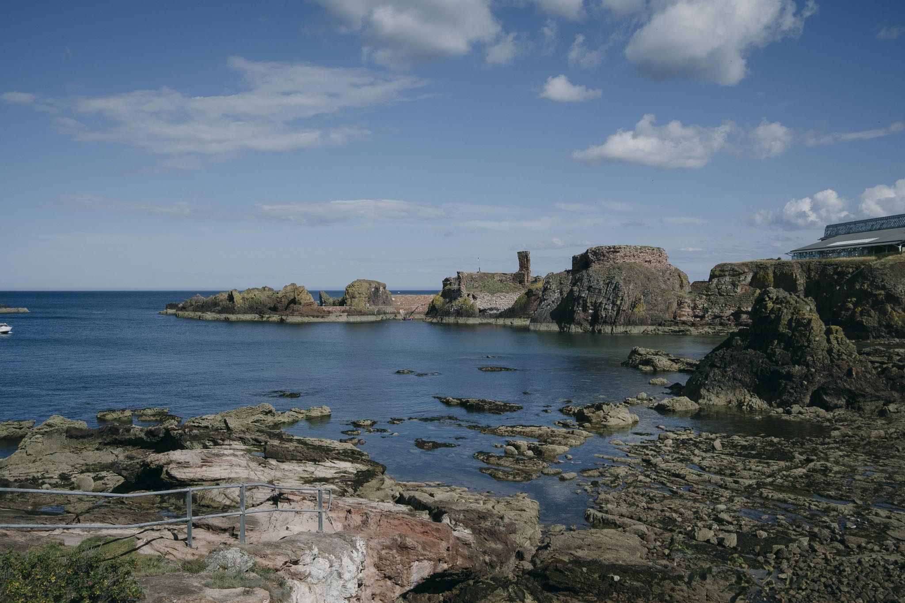

Tyninghame To Dunbar
Route
Section Walked |
Distance |
Date |
|---|---|---|
Tyninghame to Dunbar |
7.16 km |
29/8/2025 |
Notes
Dunbar’s cliff walk is gorgeous!
Public toilets in John Muir Country Park and at Dunbar.
Walked as part of the John Muir Way from East Linton to Dunbar. You can see some photos of the Dunbar cliff walk here.
